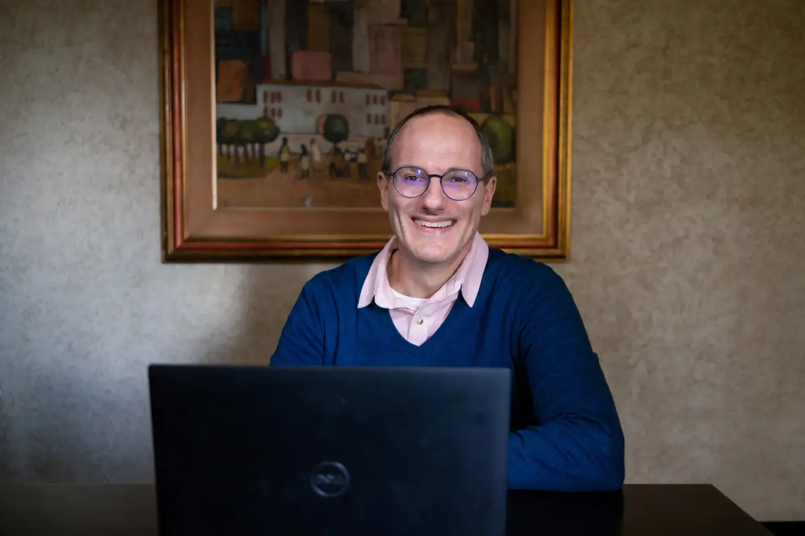
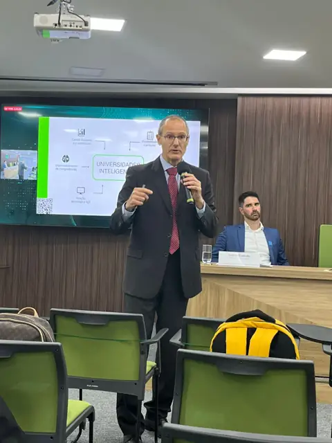
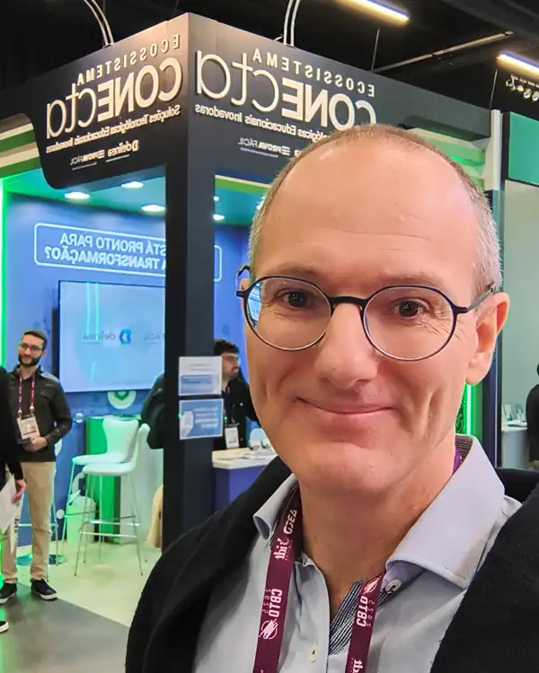

Consultoria para ensino superior e economia do conhecimento
Instituições melhores formam pessoas melhores
Apoio instituições de ensino superior e organizações que vivem do conhecimento a decidir com evidência: estratégia acadêmica, currículo por competências, sucesso do estudante, liderança e uso responsável de inteligência artificial na aprendizagem.

Sobre
Alexandre Gracioso
Sou formado pela FGV EAESP, onde também me doutorei com uma tese sobre eficácia escolar nos cursos de Administração no Brasil. Desde então, a pergunta da tese orienta meu trabalho: o que uma instituição pode fazer para melhorar a formação de seus alunos?
Na ESPM, onde atuei por mais de duas décadas e fui Vice-Presidente Acadêmico de 2011 a 2023, conduzi o Plano Diretor Acadêmico, reformulei as matrizes curriculares da graduação, criei o programa ESPM LifeLab e participei da criação dos programas stricto sensu. Antes da academia, trabalhei em consultorias multinacionais, como Arthur Andersen e A.T. Kearney.
Hoje atuo como consultor na interseção entre gestão acadêmica, aprendizagem corporativa e inteligência artificial. A AGDHO é a minha consultoria de desenvolvimento humano e organizacional.
Formação
Doutorado e graduação pela FGV EAESP; MBA em Finanças pela Simon Business School (University of Rochester); Harvard Graduate School of Education; IBGC.
Atuação recente
Consultor associado ao FGV Analytics; colunista da Revista Ensino Superior (2023–2025); porta-voz da Pearson Higher Education Brasil (2024–2025).
O que orienta o trabalho
O que uma instituição pode fazer, com as variáveis que estão sob seu controle, para melhorar a formação de seus alunos?
A tese estimou, com modelos lineares hierárquicos, o que explica o desempenho dos formandos de Administração no Provão de 2003, e propôs ações concretas para gestores de cursos. O mesmo princípio vale para cada projeto: diagnóstico com dados, foco no que a gestão pode mudar e compromisso com resultados de aprendizagem.
Serviços · Instituições de ensino superior
Estratégia acadêmica que chega à sala de aula
Para reitorias, pró-reitorias, mantenedoras e coordenações que precisam diferenciar a instituição, reter estudantes e preparar o currículo para um mundo do trabalho em transformação.
Estratégia e portfólio
Planejamento acadêmico, diferenciação estratégica e saúde financeira da IES.
- Plano diretor acadêmico
- Estimativa de demanda e desenho de portfólio de cursos
- Governança e indicadores de gestão
Currículo por competências
Matrizes curriculares, metodologias ativas e avaliação da aprendizagem.
- Reformulação de matrizes e novos cursos
- Programas transversais de competências
- Assurance of Learning (AoL) para acreditações
Sucesso do estudante
Retenção, acolhimento e bem-estar, com base nos dados da própria instituição.
- Diagnóstico das causas de evasão
- Processos seletivos e primeiro ano
- Inclusão de estudantes com necessidades especiais
IA na educação
Uso responsável de inteligência artificial no ensino, na avaliação e na gestão.
- Políticas e diretrizes institucionais
- Capacitação docente
- Automação supervisionada de tarefas acadêmicas
Serviços · Economia do conhecimento
Aprendizagem como estratégia de negócio
Para edtechs, editoras, universidades corporativas, consultorias e empresas intensivas em conhecimento que precisam desenvolver pessoas e lideranças ou entender o mercado educacional.
Programas de aprendizagem
Desenho de trilhas e programas de educação corporativa focados em competências cognitivas, socioemocionais e técnicas.
Desenvolvimento de lideranças
Liderança consciente e liderança em contextos educacionais, com workshops, mentorias e programas de desenvolvimento.
Inteligência de mercado educacional
Leitura de tendências do ensino superior, regulação, demografia, microcertificações e lifelong learning para orientar produtos e posicionamento.
Pesquisa e conteúdo especializado
Pesquisa aplicada, análise quantitativa, relatórios, e-books e artigos assinados para marcas que querem liderar o debate.
Abordagem
Do diagnóstico à mudança que se sustenta
Cada projeto parte da realidade da organização e termina com capacidade instalada, não com um relatório na gaveta.
Diagnosticar
Dados institucionais, entrevistas e comparação com referências nacionais e internacionais para entender o problema real.
Desenhar
Soluções construídas com as lideranças e as equipes, focadas nas variáveis que a gestão consegue controlar.
Implementar
Acompanhamento da execução, capacitação de docentes e gestores e ajustes de rota ao longo do caminho.
Avaliar
Indicadores de aprendizagem, retenção e resultado definidos desde o início, para medir o que de fato mudou.
Projetos de consultoria
Escopo, prazo e entregáveis definidos, do diagnóstico à implementação.
Aconselhamento contínuo
Apoio recorrente a reitorias, diretorias acadêmicas e lideranças de aprendizagem.
Palestras e workshops
Encontros sobre futuro do ensino superior, competências, liderança e IA na educação.
Trajetória
Resultados de quem já esteve na gestão
Mais de vinte anos de gestão acadêmica e quase três décadas de docência em finanças, métodos quantitativos e liderança.

Consultor associado · FGV Analytics
Integrante do projeto Economia da Longevidade, da FGV para o Banco Itaú: liderança de frentes do projeto, consolidação do relatório e produção do vídeo com as principais conclusões.
Desenho de programas de aprendizagem · Ideasense
Sócio responsável pelo desenho de programas de educação corporativa, com uso responsável de inteligência artificial.
Porta-voz e colunista · Pearson Higher Education Brasil
Representação da marca em eventos como CIAED, FNESP, ABMES e GEduc; textos para o blog; curso Empatia no local de trabalho para a plataforma Personabilities.
ESPM · Vice-Presidente Acadêmico (2011–2023)
Antes, Diretor Nacional de Graduação, Diretor de Graduação em São Paulo e Diretor de Serviços ao Estudante. Plano Diretor Acadêmico, ESPM LifeLab, Núcleo de Inovação Pedagógica, área de Sucesso do Estudante e lançamento de cursos como Design, Relações Internacionais, Jornalismo, Cinema, Sistemas de Informação e Direito.
Consultoria · Arthur Andersen, A.T. Kearney, Ericsson
Modelos de custeio, redesenho de processos, valuation e avaliação de oportunidades com teoria de opções reais, em bancos, varejo, indústria e infraestrutura.
Referências internacionais
Programas e conferências de gestão do ensino superior
- OCDE · IMHE General Conference, Paris (2010)
- LASPAU / Harvard · Institute on Innovation in Higher Education (2012)
- University of Warwick · International Programme for Leaders in Higher Education (2014)
- Missão técnica à Finlândia e Dinamarca: Aalto, CBS, Aalborg (2017)
- EFMD Annual Conference, Nova SBE, Lisboa (2019)
- Harvard Graduate School of Education · Liderança educacional (2015)
Docência
Quase três décadas em sala de aula
- ESPM (1995–2023): Planejamento Estratégico, Finanças, Orçamento, Estatística e Métodos Quantitativos; criação da disciplina Liderança Consciente
- Universidade Corporativa SEMESP (2024): estimativa de demanda para cursos e Liderança Transformadora no Ensino Superior
- Ibmec (2026): professor do curso IA na Educação
Publicações e palestras
Trinta anos de produção e debate público
Tese, livro, artigos, casos de ensino e colunas sobre estratégia e futuro das instituições de ensino superior, competências e IA na aprendizagem.
Coluna na Revista Ensino Superior (2023–2025), seleção
- A Bússola da Aprendizagem 2030 e o desenvolvimento de competências
- As falhas que levam à evasão
- Como usar IA sem prejudicar o aprendizado
- Construindo diferenciais estratégicos efetivos
- Oportunidades na Economia da Aprendizagem
- Mudanças demográficas e o apagão dos estudantes
- Como ser uma liderança eficaz na educação
Obras de referência
- Análise da eficácia escolar e do efeito-escola nos cursos de Administração de Empresas no Brasil
- Educação para o trabalho e para a vida: o caso do ESPM LifeLab
- Letramento 4.0: competências e habilidades para o trabalho
- Fosfértil: os mil dias decisivos

Palestras recentes
- Microlearning e Empregabilidade 5.0
- Educação 5.0: a nova força moldando o futuro do ensino superior
- Design Thinking na Educação
Relação completa no Currículo Lattes.
Vamos conversar sobre o desafio da sua instituição?
Uma primeira conversa, sem compromisso, para entender o contexto e avaliar como posso ajudar.
Contato
Agendar conversa
Conte um pouco sobre a sua organização e o desafio. Respondo pessoalmente.